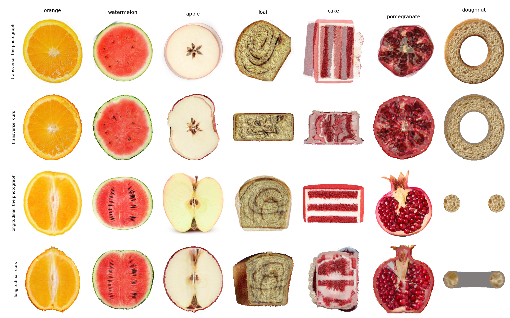
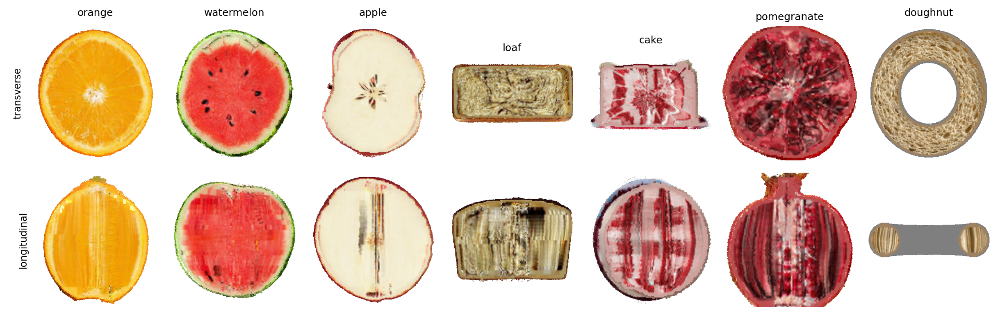
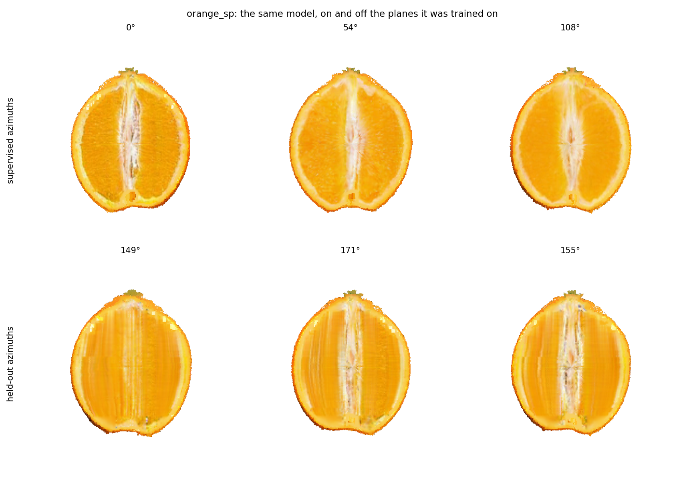
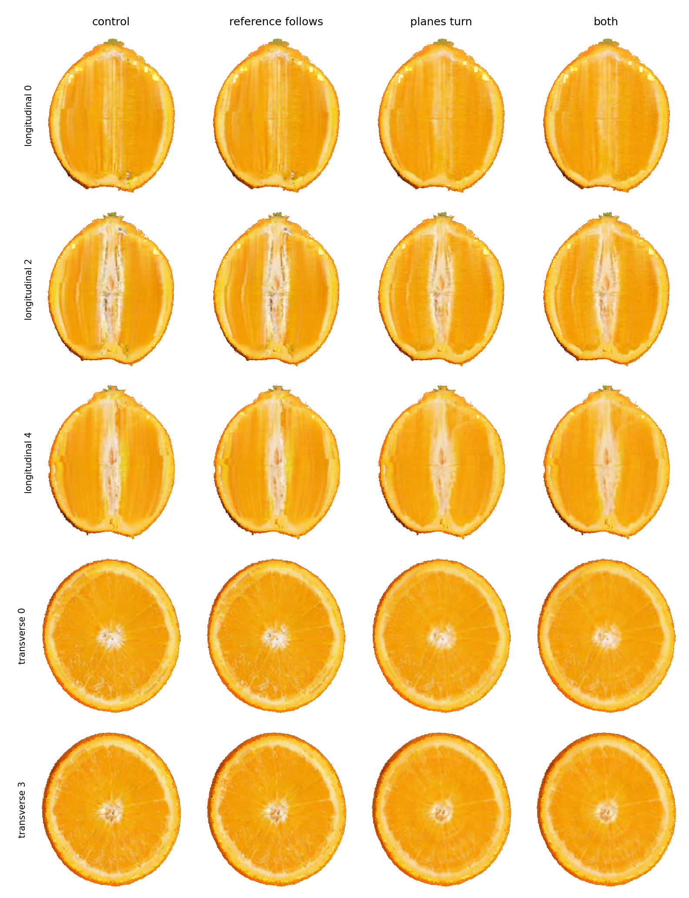
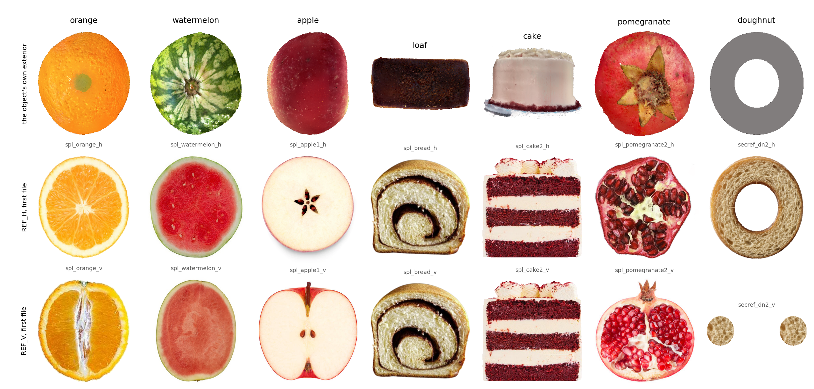

Every pixel from the dual grid and the occupancy — no Gaussian is rendered anywhere on this page
One line of code sets how many planes each family gets, and it is the change with the most at stake on this page, so here is every step of it with the measured number at each stage — not the conclusion, the arithmetic. Read it looking for where it goes wrong: it does, in three separate places, and all three are visible in the numbers below.
The lattice is read and every cell centre is projected onto the polar axis \(\hat n\), the transverse family's normal. Two numbers come out: the axis extent \(L = \max(p) - \min(p)\), and the mean radius \(r\), the average distance of a cell from the axis after the perpendicular component is centred. Both in coarse cells, so they are comparable with the lattice itself.
One correction was needed here and it moved an object by a whole plane. gs_fill.ply
carries the coarse cells and the level‑1 skin in the same rows, and the skin is all of it at
the rim: 480,287 of the orange's 1,162,387 rows. Averaging over all of them pulls \(r\) up 13%.
What the sampling has to cover is the interior, so cell_level.pt is read alongside and
the skin rows come out.
A transverse plane moves along the axis; a longitudinal plane turns about it. To resolve both at the same spacing, the arc each family steps through must be divided the same way: \(L / N_h = \pi r / N_v\). Half a circumference, not a whole one, because a plane and its opposite normal are the same cut. With \(N_h + N_v\) held at the 26 every object has always had:
N_H = clip(round(26 * L / (L + pi*r)), 2, 24) # mvcams.py N_V = 26 - N_H
| object | axis \(L\) | mean \(r\) | \(\pi r\) | \(L/\pi r\) | fixed | derived |
|---|---|---|---|---|---|---|
| orange | 126 | 33.1 | 104.0 | 1.21 | 16/10 | 14/12 |
| watermelon | 103 | 33.8 | 106.3 | 0.97 | 16/10 | 13/13 |
| apple | 121 | 33.2 | 104.4 | 1.16 | 16/10 | 14/12 |
| loaf | 80 | 32.4 | 101.8 | 0.79 | 16/10 | 11/15 |
| cake | 110 | 26.6 | 83.7 | 1.31 | 16/10 | 15/11 |
| pomegranate | 115 | 29.1 | 91.5 | 1.26 | 16/10 | 14/12 |
| doughnut | 43 | 64.6 | 202.9 | 0.21 | 16/10 | 4/22 |
16/10 is a ratio of 1.6, and no object here has \(L/\pi r\) above 1.31. For a sphere the ratio is \(2R : \pi R\), about 0.64, so anything round should give the longitudinal family more planes than the transverse one. The fixed split over-supervises the transverse family by 1.22× on the cake and 7.55× on the doughnut, whose axis is 43 cells against a half-circumference of 203. That much of the argument survives.
Three things, and the first two compound. The rule solves \(L/N_h = \pi r/N_v\), so the spacings it intends do balance — that is the first two columns below, which agree to within a few per cent on every object. What is actually laid down does not.
| object | intended \(L/N_h\) | longitudinal \(\pi r/N_v\) | actual transverse | ratio | axis supervised | rim arc \(\pi R/N_v\) |
|---|---|---|---|---|---|---|
| orange | 9.00 | 8.67 | 6.00 | 1.44 | 0.65 | 14.46 |
| watermelon | 7.90 | 8.17 | 5.14 | 1.59 | 0.63 | 13.55 |
| apple | 8.64 | 8.70 | 5.76 | 1.51 | 0.65 | 15.02 |
| loaf | 7.27 | 6.78 | 4.71 | 1.44 | 0.62 | 12.67 |
| cake | 7.33 | 7.61 | 4.78 | 1.59 | 0.64 | 14.82 |
| pomegranate | 8.21 | 7.62 | 5.48 | 1.39 | 0.65 | 12.91 |
| doughnut | 10.75 | 9.22 | 7.17 | 1.29 | 0.60 | 11.80 |
(a) A factor of 1.5 the rule never sees. The transverse depths are not
\(N_h\) samples across the axis. mvcams builds
\(M = \lceil 1.5\,N_h \rceil\) of them and supervises the middle \(N_h\), so the spacing
actually laid down is \(L/M\), not \(L/N_h\). On the orange that is 6.00 cells where the rule
believes it is arranging 9.00. Every object is 1.29 to 1.59 times finer on the transverse side than
the balance the rule solved for — so the rule systematically over-supervises exactly the
family it was written to stop over-supervising. The same construction leaves only 0.60 to 0.65 of
the axis inside the supervised band: the caps get no transverse plane at all, at
any \(N_h\).
(b) The mean radius is the wrong radius. \(\pi r/N_v\) is the arc between neighbouring longitudinal planes at the average distance from the axis. The structure that has to be resolved — segment walls, seeds, crumb — is at the rim, and the rim is 1.7 to 1.9 times the mean radius. At the rim the arc is 11.8 to 15.0 cells, not 6.8 to 9.2. Put (a) and (b) together and the orange's transverse planes sit 6.0 cells apart while its longitudinal planes sit 14.5 apart where it matters: a factor of 2.4, in a rule whose entire purpose was to make that factor 1.
(c) More planes is not more information. The photographs do not multiply with the planes.
| object | transverse photos | longitudinal photos | derived split | longitudinal planes per photo |
|---|---|---|---|---|
| orange | 3 | 3 | 14/12 | 4.0 |
| watermelon | 10 | 12 | 13/13 | 1.1 |
| apple | 2 | 2 | 14/12 | 6.0 |
| loaf | 3 | 3 | 11/15 | 5.0 |
| cake | 2 | 2 | 15/11 | 5.5 |
| pomegranate | 2 | 2 | 14/12 | 6.0 |
| doughnut | 1 | 1 | 4/22 | 22.0 |
The doughnut is the case that makes it plain. The rule moves it furthest of all, to 4/22, because it is the roundest thing here — and it has one longitudinal photograph, so all 22 planes are handed the same target. It is also the only object that got worse on both columns. The watermelon, which has 12 longitudinal photographs for 13 planes, is the only object where a longitudinal plane is nearly always given its own picture.
The paper's pipeline stores appearance on a two-level cube lattice and draws it through the 3D Gaussian rasteriser: the cells are splatted. This page is a separate build in which nothing is splatted. The object is an O‑Voxel dual grid and a per-cell interior field, the cut face is the closed-form polygon of a plane against the occupancy, and both go into one nvdiffrast pass. It answers a question the paper cannot: what does this object look like when the representation is carried all the way through, rather than converted at the surface and splatted underneath?
code/ovoxel_native/, trained separately. The paper's
tables are unaffected by anything here, and where the two disagree the paper's numbers are the ones
that were produced by the pipeline it describes.
Three tensors are the model, and nothing else is. Two more are fixed and come from the occupancy.
| tensor | shape | what it is | trained |
|---|---|---|---|
dual_v | \((N_s, 3)\) | where the surface sits inside each active fine voxel | pinned here |
split_w | \((N_s, 1)\) | how each dual quad is split into two triangles | pinned here |
surf_rgb | \((N_s, 3)\) | the exterior's colour, one per dual vertex | pinned here |
interior | \((N_c, 3)\) | the volumetric appearance, one colour per solid coarse cell | yes |
coords, inter | \((N_s, 3)\) | which fine voxels are active and which of their edges the surface crosses | fixed |
solid, idx3 | \((N_c, 3)\) | the occupancy after closing and filling, and its index | fixed |
interior is the part TRELLIS.2's own container does not carry, because
mesh_to_flexible_dual_grid only ever returns boundary voxels — a dual grid is a
surface, and a cuttable object needs a volume. It is not stored as colours: each cell holds an
8‑dimensional latent and a shared two-stage decoder produces the colour, which is the paper's
anchor decoder applied to this container. The exterior gets a second decoder of its own, so the two
populations cannot leak into each other.
Everything on this page is trained with the exterior pinned, which is the pipeline's own setting: the shape and the skin come from the released model and only the interior beneath them learns. What that leaves free is between 3.2 and 6.2 million floats depending on the object.
The three steps that are not obvious are worth stating plainly.
The occupancy is built once and never moves. The coarse cells that hold a primitive are closed and filled, so the volume is a solid rather than a shell, and the dual grid is extracted from the boundary of that solid at the fine spacing. Connectivity therefore comes from the occupancy and not from where any vertex sits, which is what lets the cut stay closed form.
The cut is a formula, not a mesh operation. A plane meets a cube in a convex polygon whose vertices are the crossings of its twelve edges, so the exposed face of a cut is the union of one polygon per crossed cell, computed directly. Each vertex takes its colour by trilinear interpolation of the interior field at its own position — not at the cell centre, which for a face passing near a material boundary would fall on the wrong side of it.
Both surfaces go into one pass. The exterior mesh is filtered to the half the plane keeps, the cut polygons are appended, and the two are rasterised together, so the depth test composes them and nothing has to be blended between two renderers. That is the whole reason the exterior was converted rather than left as Gaussians: a splatted shell covers only 7 to 20% of the frame at \(\alpha\) above one half, so at the silhouette a cut face shows through from the side it should be hidden on.
Each video is one object, cut twice. On the left a plane perpendicular to the polar axis walks down it; on the right a plane containing the axis walks across. Nothing is composited: what changes between frames is one number, the plane's offset.
Two figures, and the difference between them is the whole story of this build. The first is the supervised case: a plane the training was shown, beside the photograph it was shown for it. The second is the held-out case, where no photograph exists.

section_target either, which maps the reference onto the render's own silhouette and
would therefore be compared against something already shaped like the answer. The watermelon's
seeds, the apple's core, the loaf's swirl, the cake's layers and the pomegranate's arils are all
in the right places. Two mismatches are the photographs' rather than the model's: the loaf and
the cake are photographed as a slice held at an angle while the plane cuts the object where it
actually is, so the silhouettes differ before anything is reconstructed. The doughnut's
longitudinal photograph is two discs and the render joins them, which is the far inner wall
discussed under the held-out figure below.
HELDOUT_BAND=0.30,0.70. The doughnut's longitudinal plane
passes through the hole and meets the ring twice, which is why it shows two crumb faces with a
grey band between them. The grey is not a cut face and not a filled hole — the occupancy
has no solid cell anywhere near the middle, and rendering the same plane with the exterior
switched off removes every grey pixel of it. It is the ring's far inner wall, drawn by
the dual grid and composited behind the plane exactly as it should be, and it is grey because
the inside of a torus faces none of the six exterior directions that painted the skin, so it
kept the flat value make_shape wrote. The pipeline shows nothing there at all,
which is the same fact from the other side: a Gaussian shell does not cover that
surface.| object | solid cells | dual vertices | trainable floats | 5,200 gradient steps |
|---|---|---|---|---|
| orange | 770,182 | 900,556 | 6,182,467 | 1,134 s |
| watermelon | 709,368 | 810,071 | 5,695,955 | 954 s |
| apple | 756,905 | 924,929 | 6,076,251 | 1,156 s |
| loaf | 396,075 | 448,876 | 3,189,611 | 868 s |
| cake | 395,613 | 616,332 | 3,185,915 | 1,056 s |
| pomegranate | 491,350 | 718,534 | 3,951,811 | 1,347 s |
| doughnut | 544,568 | 316,285 | 4,377,555 | 811 s |
The same budget in every case, on one L40S. The doughnut has more solid cells than dual vertices, which no other object does: a torus is mostly interior and has comparatively little surface, and the two counts measure exactly that.
The two families differ in more than orientation. The transverse planes are a stack: they are parallel, ordered along the polar axis, and the photographs that supervise them are ordered the same way, so which photograph belongs at which depth is a question with an answer. The longitudinal planes are a fan: they all contain the axis and differ by azimuth, so they all cut the same material and any of them could be compared against any photograph.
That difference has a consequence which is visible rather than theoretical. A transverse cut crosses no depth boundary — it is one depth — while a longitudinal cut crosses every one of them, so anything that varies discontinuously with depth appears as a band across the longitudinal face and not at all on the transverse one. Which is what was found, and fixed.
The continuous depth assignment had only ever been applied to the longitudinal family. The transverse family used integer division: with \(L\) photographs and \(n\) planes, plane \(j\) took photograph \(\lfloor jL/n \rfloor\), so the photograph changed abruptly at \(L-1\) depths and every plane between two changes was supervised by whichever photograph its side of the switch fell on. Since the transverse planes stack along the axis, each switch drew a line across it.
Both families now take the two photographs either side of the depth and mix them at the fractional part, on a common disc so that two photographs of two different objects are the same size in the same place before they are mixed. Every object was trained twice — identical in every respect except this — so the difference is attributable.
| object | photographs | jump at the switch depths | held-out probe | ||
|---|---|---|---|---|---|
| block rule | blended | block rule | blended | ||
| orange | 3 | 4.97 | 4.20 | 0.03273 | 0.02953 |
| watermelon | 10 | 4.20 | 3.43 | 0.01654 | 0.01584 |
| apple | 2 | 7.63 | 7.35 | 0.03168 | 0.03000 |
| loaf | 3 | 2.55 | 3.04 | 0.05890 | 0.05201 |
| cake | 2 | 8.47 | 7.16 | 0.10716 | 0.10070 |
| pomegranate | 2 | 10.57 | 3.75 | 0.18457 | 0.16372 |
| doughnut | 1 | — | — | 0.02432 | 0.02432 |
The jump is the size of the discontinuity in the axial luminance profile at the depths where the block rule changed photograph, in units of that profile's own median jump, so an object of low contrast is comparable with one of high contrast: 1.0 would mean those depths look like any other depth. The probe is the held-out score the training reports, lower being better.
The probe improves on every object where the blend does anything. The banding falls on five of the six that have switches, most on the pomegranate, and rises only on the loaf — which had the least banding to begin with and whose axial profile carries a real cinnamon spiral the statistic cannot tell from an artefact. The doughnut is bit-identical in both arms because it has one photograph and the blend correctly falls back to the block rule, which is the check that it is a no-op where there is nothing to blend.
Each one leads with what it produced — the orange cut twice, transverse on the left and longitudinal on the right — then its numbers, then what it settled. They are all the same object at the same 5,200 gradient steps, so the videos are comparable with each other and the numbers are DreamSim against the object's own references, lower being better. The floor, two disjoint halves of a reference family scored against each other, is 0.0593 transverse and 0.0777 longitudinal.
| object | transverse | longitudinal | ||
|---|---|---|---|---|
| fixed 16/10 | shaped | fixed 16/10 | shaped | |
| orange | 0.0859 | 0.0804 | 0.2257 | 0.2061 |
| watermelon | 0.1599 | 0.1623 | 0.2044 | 0.1992 |
| apple | 0.2472 | 0.2534 | 0.3557 | 0.3437 |
| loaf | 0.3774 | 0.3818 | 0.4849 | 0.4214 |
| cake | 0.4641 | 0.4651 | 0.5017 | 0.4890 |
| pomegranate | 0.2372 | 0.2461 | 0.4836 | 0.4718 |
| doughnut | 0.0980 | 0.1540 | 0.5494 | 0.5550 |
| mean | 0.2385 | 0.2490 | 0.4008 | 0.3837 |
The orange improves on both columns and it is the only object that does. Across the seven the longitudinal column improves six times and the transverse column degrades six times, so this is the same trade as everything else, not an exception to it — a conclusion drawn from the orange alone would have been wrong. The loaf gains most, 13%, and it is one of the two whose split moves furthest; the doughnut's split moves furthest of all, to 4/22, and it loses on both.
Swept over four magnitudes, the cost is monotone and the benefit is not: longitudinal 0.2257, 0.2077, 0.2071, 0.2015 at 0, 0.25, 0.35 and 0.5, against transverse 0.0859, 0.1045, 0.1137, 0.1220. Most of the gain is bought by 0.25 and the rest of the range buys a third as much for the same again. Coverage saturates at 0.5 and the training effect saturates at 0.25, so the geometry does not predict the optimisation — which is worth saying because it was used to predict it, and was wrong.
More planes is an expensive way to buy coverage. Pinned sheets cover in proportion to their number, so the shared fraction goes 15.8%, 31.8%, 55.7%, 84.4% at one, two, four and eight times the planes, while turning reaches 86.4% at the original count. The photographs do not multiply either: the orange has three longitudinal references, and forty-eight planes divide the same three between them.
Measured three times, in three regimes, and it does nothing in any of them. With the families sharing 14% of the cells it was worse in every column and monotonically in its weight; with them sharing 90%, after turning, it moved both columns by under 1% and four times the weight made almost no difference, which is the signature of a term that is not acting rather than one that is tuned; with them sharing 56%, here, it trades 2.5% of one column for 2.4% of the other. The weight was taken from the gradient magnitudes the last two times — Chamfer's is 2.48e−4 against the pixel loss's 2.10e−5 — so the earlier failure at 0.2 and 1.0 was not simply the wrong scale.
One gradient step now sees both families. The loop used to shuffle all 26 supervised planes and take a step per plane, so a cell that both families cross was pulled towards one photograph and then towards the other, and what it settled on depended on which came last. Every step now contains one transverse plane and one longitudinal plane, with each family's loss scaled by its plane count over the number of groups so its total weight across an outer iteration is exactly what it was — without that, cycling the shorter family would quietly give it more say. Grouping takes 16 steps per outer iteration instead of 26, so these runs are 325 iterations rather than 200 and the budget is the same 5,200 steps.
The interior field gets a spatial prior. The pipeline's interior is a set of primitives whose footprints overlap several coarse cells, so a cell's colour is averaged with its neighbours' for free and no cell is ever fitted alone. This representation is piecewise constant per cell with no overlap: a cell crossed by one supervised plane is fitted to one photograph's pixel and nothing couples it to the cell beside it except the decoder's shared weights. The missing coupling is stated as a prior instead — the squared difference between the decoded colours of cells that share a face, over the 2.3 million such pairs the orange's occupancy has, at a weight chosen by sweeping two decades.
| object | floor | transverse | floor | longitudinal | ||
|---|---|---|---|---|---|---|
| before | after | before | after | |||
| orange | 0.0593 | 0.0872 | 0.0859 | 0.0777 | 0.2409 | 0.2257 |
| watermelon | 0.0790 | 0.1599 | 0.1599 | 0.0960 | 0.2107 | 0.2044 |
| apple | 0.0927 | 0.2537 | 0.2472 | 0.1984 | 0.3715 | 0.3557 |
| loaf | 0.2061 | 0.3830 | 0.3774 | 0.2061 | 0.4966 | 0.4849 |
| cake | 0.2800 | 0.4522 | 0.4641 | 0.2800 | 0.4858 | 0.5017 |
| pomegranate | 0.1022 | 0.2662 | 0.2372 | 0.1225 | 0.5092 | 0.4836 |
| doughnut | — | 0.1025 | 0.0980 | — | 0.5520 | 0.5494 |
| mean | 0.2435 | 0.2385 | 0.4095 | 0.4008 | ||
DreamSim against each object's own reference family, lower being better, on the same held-out planes. The floor is that family's photographs split in half and scored against each other, which is how far apart two real sections of one object are. Transverse improves on five of the seven and is level on the watermelon; longitudinal improves on six. The cake is the only object that goes the other way, and it goes the other way on both.
The longitudinal cuts still do not look like longitudinal cuts, and the reason is not the renderer, the reconstruction filter or the coupling between cells. It is visible in one figure: the same model, the same renderer, and only the plane changed.

Five degrees at sixty cells of radius is five cells, so a held-out plane crosses a different set of cells — and those cells were never asked to be anything in particular. The asymmetry is in the data rather than in the code. The transverse family is one camera and 24 depths, of which 16 are supervised and each is jittered by half a step, because there are photographs at many depths. The longitudinal family is one camera per azimuth at the middle depth only, never moved, because every longitudinal photograph is a central section. The supervised planes sit 3.1 to 3.4% of the radius off the axis; the held-out ones sit at 4.6 to 12.3%.
Sweeping the longitudinal plane the way the transverse one is swept was implemented and measured, and it is the wrong repair: dumping the target at 0%, 5% and 12% of the radius gives the same full central section all three times, because that is the only photograph there is, so the model is asked to reproduce a central cut at an off-centre depth. Against the same arm without it, a jitter of 0.05 of the radius gives 0.1186 transverse and 0.2224 longitudinal where the arm without gives 0.0859 and 0.2300 — a small longitudinal gain for a 36% transverse cost, which grows with the jitter. What the held-out longitudinal planes are asking for is a photograph that does not exist.
The two families are not two views of the same thing, and the difference is not a matter of degree. Counting by geometry alone, no training involved: a plane crosses a cell when the cell's corners are not all on one side of it, the transverse family is its 16 supervised depths each widened by the half-step it is jittered through, and the longitudinal family is its 10 azimuths.
| the orange's 770,182 solid cells | reached |
|---|---|
| by the transverse family | 92.4% |
| by the longitudinal family | 15.9% |
| by both | 14.1% |
| by neither | 5.7% |
The transverse family sweeps, because it has many depths and each is jittered. The longitudinal family is ten fixed sheets through the axis that never move, and two sheets do not cover what lies between them. 84% of the object has no longitudinal supervision at all, so a held-out longitudinal cut passes almost entirely through cells only the other family ever constrained — which is a more basic cause of the striping than the references being central sections. The watermelon answers the same way: 88.9%, 16.3%, 13.7%.
Sliding a longitudinal plane along its normal was tried first and is the wrong degree of freedom: it takes the plane off the axis, and every longitudinal photograph is a central section, so the target stops describing the cut the plane is taking. Turning the plane about the axis keeps it through the axis, so it is still a central section and the photographs are still the right kind, while it sweeps the azimuths between the ten.
| turn, as a fraction of the 18° spacing | longitudinal reaches | both reach | neither |
|---|---|---|---|
| 0 — pinned | 15.9% | 14.1% | 5.7% |
| 0.25 | 64.0% | 58.7% | 2.3% |
| 0.35 | 82.0% | 75.5% | 1.0% |
| 0.50 | 97.7% | 90.4% | 0.3% |
| 0.75 | 99.4% | 91.9% | 0.1% |
Coverage climbs almost linearly to 0.5 and flattens immediately after, and the corner is not a coincidence: 0.5 is where each plane's swept wedge meets its neighbour's, and beyond it the extra turn only re-covers ground.

| arm | transverse | longitudinal |
|---|---|---|
| control | 0.0859 | 0.2257 |
| reference follows the jitter | 0.0867 | 0.2255 |
| planes turn, 0.5 | 0.1220 | 0.2015 |
| both | 0.1193 | 0.2026 |
It is a trade and it is stated as one. Turning is the largest single improvement to the longitudinal column measured here — 11%, against 6.4% for the depth blend, 4.5% for the joint step and 2% for the field prior — and it costs the transverse column 42%. The picture and the number disagree about how those compare: the striping leaving is plain, the transverse degradation is not visible at all. It is not on by default, and which way the trade falls depends on what the object is for.
Choosing the reference at the position the plane was jittered to, rather than at its index, sounds as though it should matter and does not: 0.0867 and 0.2255 against 0.0859 and 0.2257 is inside the noise, and it costs half again as much per step. It is kept, off, with the numbers in the source.

Two objects supervise both families from the same files. Hashing them: the loaf's
spl_bread_h and spl_bread_v are the same three photographs, and the cake's
are the same two. The confs said so in prose — the loaf's records that references exist for
one family only, and the cake's the same — and the implementation of that limitation was to
point both families at one directory, which makes it invisible in every table. FruitNinja released
five photographs of the loaf and all five are the same kind of section, an end-on slice showing the
swirl; there is no photograph of a cut along its length.
How well each family's photographs agree in shape with the object's own cut, as the product of silhouette overlap and radial-profile correlation — transverse then longitudinal:
| object | transverse | longitudinal |
|---|---|---|
| watermelon | 0.80 | 0.78 |
| apple | 0.55 | 0.84 |
| orange | 0.73 | 0.55 |
| doughnut | 0.69 | 0.15 |
| cake | 0.47 | 0.40 |
| pomegranate | 0.33 | 0.13 |
| loaf | 0.19 | 0.23 |
The three that read worst are the three that look wrong. Which way up each object's photographs were stored is a separate question and not one this work can defend an automatic answer to; there is a turntable for reading it off instead.
The section loss compares a render with a photograph pixel by pixel, and the photograph is of an orange rather than of the one being reconstructed, so part of what it asks for is impossible. An obvious repair is to stop comparing positions: take the patches of each as two point sets and compare the sets. Three distances were implemented and measured, and none of them helps.
Two are settled by the references alone, before any training. Comparing each family's photographs against the floor — two disjoint halves of one photograph's own patches — gives the ratio of between-photograph to within-photograph distance:
| distance | within one photograph | between photographs | ratio |
|---|---|---|---|
| sliced Wasserstein | 0.000250 | 0.008865 | 35.4 |
| Jensen–Shannon | 0.001433 | 0.086100 | 60.1 |
| MSE, for scale | 0.001364 | 0.014618 | 10.7 |
| Chamfer | 0.159661 | 0.389924 | 2.44 |
Sliced Wasserstein and Jensen–Shannon hold the photographs further apart than the pixel loss they would replace, so a target built from them is less consistent across the family, not more. The reason is not that they are bad distances: they are sensitive to the proportions of each kind of patch, and the proportions are a property of whichever object was photographed rather than of the class. Chamfer is the one whose premise survives, at 2.44, because it asks whether the vocabulary of patches matches and not in what amounts.
Chamfer was therefore trained, at two weights, against an otherwise identical arm. It is worse in every column and monotonically in the weight: the held-out probe goes 0.02958 to 0.03014 to 0.03090, the banding 3.78 to 4.12 to 4.38, and the detail 0.1772 to 0.1617 to 0.1574. Blind to proportions turns out to mean blind to the amount of structure — a face that covers the vocabulary thinly satisfies it — and the detail column is that happening.
| cells both families cross | Chamfer weight | transverse | longitudinal |
|---|---|---|---|
| 90% — the planes turn, 0.5 | 0 | 0.1220 | 0.2015 |
| 0.02 | 0.1213 | 0.2011 | |
| 0.08 | 0.1218 | 0.2004 | |
| 56% — 104 planes | 0 | 0.1083 | 0.1826 |
| 0.08 | 0.1110 | 0.1783 |
The qualification was worth making and it did not survive. At 90% shared the term moves both columns by under 1%, and quadrupling its weight moves them by almost nothing further — which is the signature of a term that is not acting, not of one that needs tuning. At 56% it is a trade like every other change here, 2.5% of the transverse column for 2.4% of the longitudinal. The first arms, at 14%, were scored on the earlier probe rather than these two columns and are the ones quoted above; they are the only case where it is clearly harmful, and also the only case where the weight was guessed. So Chamfer has now been trained with a seventh, a half and nine tenths of the object shared between the families, twice at a weight taken from the gradients, and it is harmful once and neutral twice. The gradient conflict it demonstrably relaxes is not what was limiting this.
The code is kept, off by default, because the reasoning is more valuable than the result was.